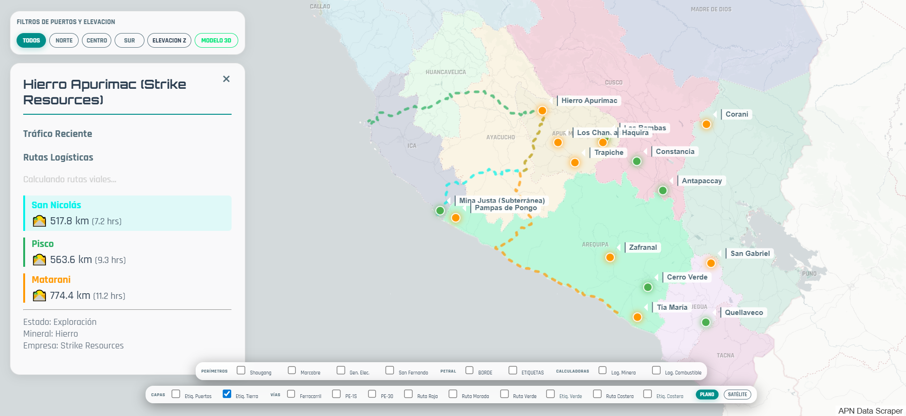

CUESTIONARIO PARA CLIENTES POTENCIALES
PROYECTO: HIERRO APURÍMAC (STRIKE RESOURCES)
1. INTRODUCCIÓN Y ANÁLISIS LOGÍSTICO
El presente análisis tiene como objetivo validar las ventajas logísticas de Puerto San Nicolás frente a las alternativas actuales.
Actualmente, la evacuación de mineral de Hierro Apurímac se realiza mayoritariamente hacia el puerto de Pisco. Sin embargo, el análisis geoespacial de rutas confirma una desventaja competitiva en la configuración actual.

Figura 1: Comparativa de Rutas Logísticas - Hierro Apurímac
Datos Comparativos:
Pregunta Clave: Considerando que San Nicolás ofrece una reducción directa en distancia y tiempo de ciclo, ¿cuál es el costo de oportunidad actual (USD/ton) de operar vía Pisco?
2. MATERIAL
2.1. ¿Cuál es la composición química detallada del concentrado de hierro a exportar?
2.2. ¿Cuál es el porcentaje de humedad promedio y máximo?
2.3. ¿Requiere condiciones especiales de almacenamiento (techado, control de polvo)?
3. VOLÚMENES
3.1. ¿Cuál es la producción anual estimada para los próximos 5 años?
3.2. ¿Cuál es el tamaño de lote de embarque típico (DWT de las naves)?
3.3. ¿Existe estacionalidad en la producción?
4. LOGÍSTICA
4.1. ¿Cuál es el origen de la carga (Mina/Planta) y la distancia al puerto?
4.2. ¿Qué modalidad de transporte terrestre utiliza actualmente (Camión/Tren/Mineroducto)?
5. CONTRATOS
5.1. ¿Cuál es el horizonte temporal preferido para un contrato de servicios portuarios?
5.2. ¿Está dispuesto a esquemas de Take-or-Pay?
5.3. ¿Qué penalidades considera críticas en el servicio de embarque?